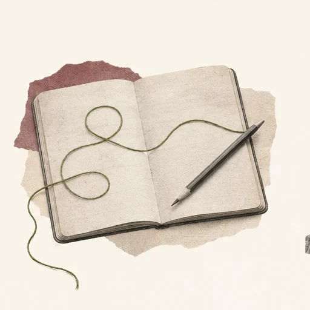
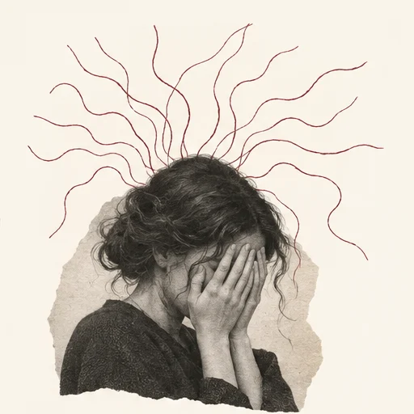

Understanding yourself and your relationships
Articles
Clear explanations, everyday examples and visual guides to help you make sense of your experience.

Your first sessionGetting ready for your first session
What to expect, what you can ask and how to prepare for an online meeting.
Read article
Understanding CBTThoughts, feelings and behaviour in CBT
A simple explanation of how our interpretations, feelings and actions influence one another.
Read article Anxiety · in Russian
Anxiety · in RussianWhy anxious thoughts keep returning
An everyday example, a CBT diagram and questions to help you notice your own patterns.
Read article